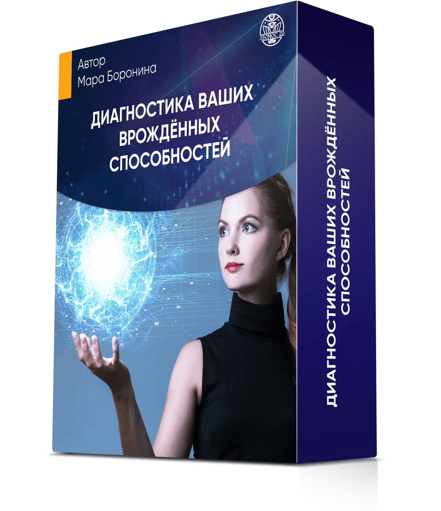
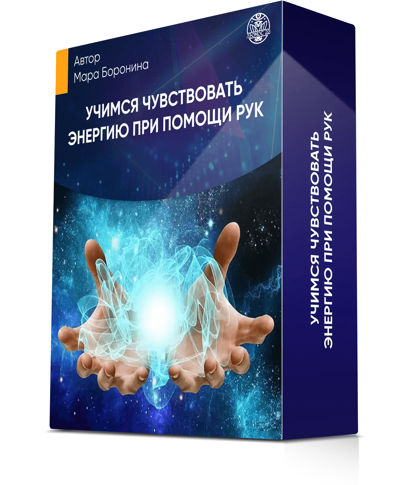
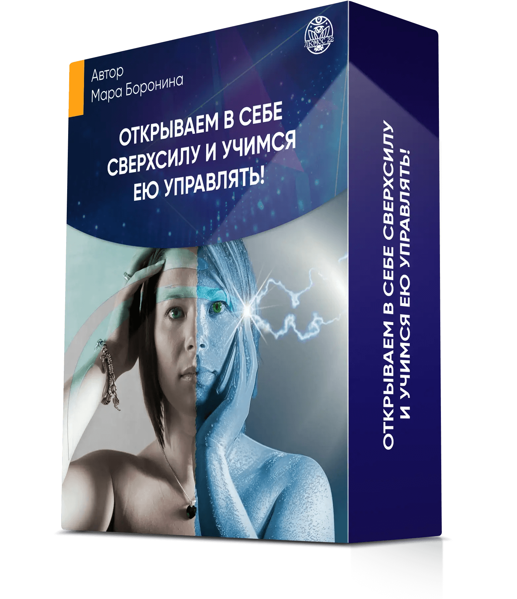

Программа марафона
-
Диагностика ваших врождённых способностей
- Узнаете, что такое ясновидение, яснознание, яснослышание, ясночувствование и поймёте, в чем разница?
- Определите, есть ли у вас врожденный дар?
- Пройдете практику на выявление Личного Канала Сверхспособностей
- Пройдете практику на раскрытие Аджна-чакры (усиления восприятия информации)
- Совершите практику альфа-погружение на выявление вредительских воздействий со стороны
- Узнаете, где находится Центр Управления Судьбой
РЕЗУЛЬТАТ:
- Знаете, что сверхспособности — это не удел избранных, вы тоже обладаете ими с рождения, главное — выявить и раскрыть свой потенциал
- Определили, какие каналы восприятия существуют и как их использовать для усиления своих возможностей для себя и близких, на работе и в быту
- Выявили сторонние негативные воздействия, которые не дают развиваться вашим способностям
-
Учимся чувствовать энергию при помощи рук
- Пройдете диагностику на выявление блоков энергии
- Сделаете нумерологический расчет сверхспособностей по дате рождения
- Пройдете практику на раскрытие чувствования энергии в руках
- Получите практику раскрытия энергии на каждый день
РЕЗУЛЬТАТ:
- Знаете, какие именно способности были даны вам при рождении
- Научились чувствовать энергию с помощью рук и понимаете, как можно использовать её для определения проблем со здоровьем и устранения боли
- Освоили методику экстренной энергетической помощи и знете, как мгновенно восстановить работоспособность при упадке сил
-
Открываем в себе Сверхсилу и учимся ею управлять!
- Узнаете 6 законов Сверхсилы
- Выясните, что делать, если вы обнаружили в себе сверхспособности: как ими управлять и что будет, если их не применять на практике
- Узнаете, как использовать вещие сны для реализации способностей
- Получите практику восполнения ресурса и энергии за 6 минут
- Пройдете практику-доступ к Центру Сверхсилы в вашем теле
- Узнаете, как формулировать намерения и желания так, чтобы они исполнялись с вероятностью 100%
РЕЗУЛЬТАТ:
- Поняли, как экологично управлять своими способностями и использовать их для помощи себе и близким
- Знаете, как взаимодействовать с вещими снами и формировать намерение так, чтобы достигать свих желаний и целей со 100% точностью
- Восстановили свой энергетический баланс на практикуме, после чего вы ещё неделю ощущаете выраженный эффект: прилив сил и работоспособности, позитивное настроение, заряд мотивации, отличное самочувствие, повышение дохода и пребывание на волне удачных обстоятельств
Вам обязательно нужно участвовать в марафоне, если:
-
Вам хотелось бы обладать сверхвозможностями: "чувствовать" людей вокруг, убирать боль руками, притягивать удачные обстоятельства
но вы считаете, что таким потенциалом обладают только избранные и это возможно только в фантастических фильмах
Уже на практикуме вы не только выявите свои скрытые способности, но и ощутите их физически:
- узнаете, какая энергия на ощупь
- освоите навык мгновенного восстановления энергии при упадке сил
- научитесь формировать желания так, чтобы они осуществлялись со 100% вероятностью
-
В вашем роду были целители или ясновидящие, или вы давно замечаете, что воспринимаете мир иначе:
ощущаете в себе особые способности, видите больше, чем другие, но не знаете, что с этим делать
Вы определите свои врождённые способности, и научитесь экологично ими управлять:
- овладеете 3-мя системами восприятия: визуальной, аудиальной и кинестетической
- научитесь считывать информацию о прошлом, настоящем и будущем
- освоите работату с чакровой системой
- узнаете, как применять свои сверхспособности для помощи себе и своим близким в 4-х важнейших сферах жизни: здоровье, отношениях, работе, финансах
-
Вы занимаетесь коучингом или консультированием в сфере психологии, нумерологии, медицины,
и хотите расширить набор практических инструментов для помощи своим клиентам
Вы получите соврменные авторские методики и техники, которые:
- откроют новые возможности для работы с клиентами
- усилят ваши личные способности
- помогут вам восстанавливаться после сложных сессий в разы быстрее
Всего за 3 дня
вы обретете уверенность в своей силе и сверхспособностях и поверите, что способны на большее:
-
1
Научитесь считывать информацию из настоящего, прошлого и будущего
-
2
Узнаете, какой у вас основной канал экстрасенсорного восприятия и считывания информации
-
3
Сможете наполняться Энергией Жизни за 3 минуты через особую альфа-практику
-
4
Поймёте, как убрать денежные блоки и вредоносные воздействия со стороны (которые есть у 90% людей в мире)
-
5
Рассчитаете, есть ли у вас сверх-способности по дате вашего рождения